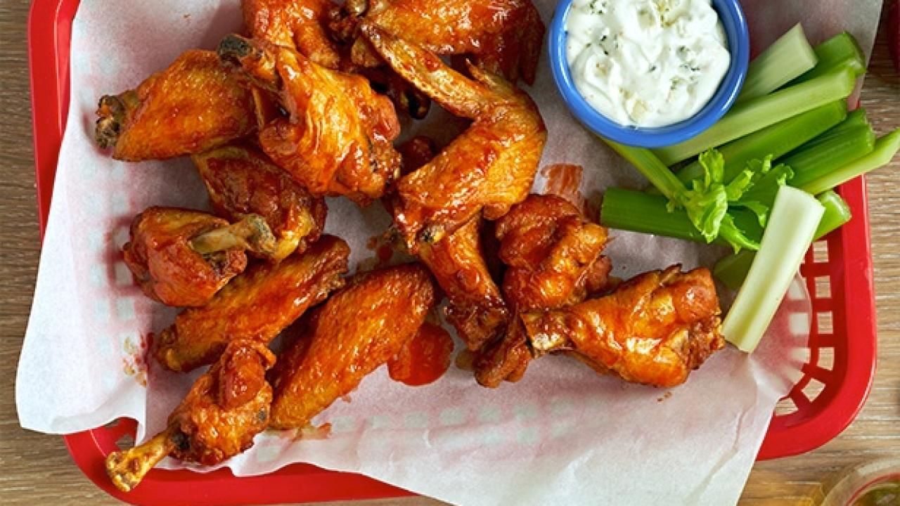

🔥 Hot Wings 🔥

Description
Classic Hot Wings 🔥
Ingredients
- Canola oil
- 24 chicken wing parts
- Cayenne Hot Pepper Sauce
- 1 stick butter
- Worcestershire sauce
- Tabasco Sauce
- Blue Cheese
- Celery sticks/li>
Steps
- Preheat the oven to 325 degrees F. Heat 3 inches of canola oil in a heavy pot to 375 degrees F.
- Add half the chicken wing parts to the oil and fry them until they're golden brown and fully cooked, 5 to 7 minutes. Remove and drain on paper towels. Repeat with the other half of the wing parts. In a saucepan, heat the cayenne sauce and butter over medium-low heat. Add the Worcestershire and hot sauce. Let it bubble up, and then turn off the heat. Place the wings in an ovenproof dish and pour the hot sauce over the top. Toss to coat, and then bake in the oven for 15 minutes.
- Serve with blue cheese dip, celery sticks... and your favorite cold, fizzy beverage.